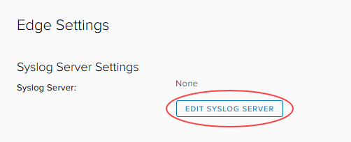
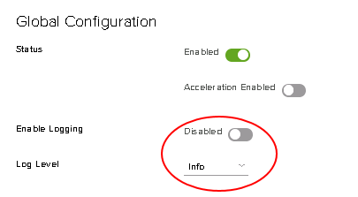

How to access syslog data for your advanced gateway
Overview
Your NSX edge is globally configured to send syslog messages to a specific IP address (100.127.255.250). By configuring a new network or IP address within your virtual data centre (VDC) and deploying a collector with the syslog IP address, you can access your NSX edge syslog data. You can then use this data to check:
Allowed and denied network traffic
Load balancer statistics
Load balancer health
This guide explains the network configuration required to provision a syslog collector within your VDC to receive syslog information direct from your NSX gateway.
Collecting syslog data for a single NSX edge
The simplest scenario is to gather syslog data from a single NSX edge into one collector. To do this you need to create a routable location for the syslog IP address, by either:
Adding the syslog IP address to an existing NIC
Add the syslog IP address to a subnet on the routed network.
For example, if your existing monitoring server has a NIC on eth0 (for example,
10.0.1.10), on routed VDC network10.0.1.0/24, you'd add the syslog IP address to eth0.Add a route on the NSX ddge that routes the syslog IP address via the subnet.
For example, route
100.127.255.250 MASK 255.255.255.255via10.0.1.10.Configure the software on your existing monitoring server to capture data from the IP address of the NSX edge.
Note
The steps to achieve this depend on your operating system and chosen syslog server.
Configuring a new routed network
Create a new routed network with the following details:
Org Network Name: Customer defined
Gateway:
100.127.255.249Subnet Mask:
255.255.255.248DNS: Customer defined
Static IP Pool:
100.127.255.250-100.127.255.254
You can find more detailed steps for creating a routed network in How to create a routed VDC network.
Deploy a new syslog server connected to the new routed network with a static address of
100.127.255.250and install and configure the syslog server's NSX edge.Note
The steps to achieve this depend on your operating system and chosen syslog server.
Collecting syslog data for multiple NSX edges
If you have multiple NSX edges under a single NFT, you can gather the data from all those edges into the same syslog collector.
Set up a single syslog collector for one of your NSX edges as described in the previous section.
Note
We'll refer to this NSX edge as the syslog edge and all the other NSX edges as source edges.
Confirm that you can see the local syslog traffic from the local syslog edge.
Create a firewall rule on the syslog edge to allow syslog traffic from the source edges' TRANSIT IPs (
172.26.x.xin Assured or172.26.LOWER OCTET.xin Elevated) through to the syslog server IP.You can create individual rules using the following suggestions:
SOURCE TRANSIT IP:Anyto100.127.255.250on UDPAny:Anyto100.127.255.250:514on UDPNFT TRANSIT CIDR/SUBNET:Anyto100.127.255.250:514on UDP
On each of the source edges, create a static route to direct traffic to the syslog edge. Use the following settings:
Applied On:
nft_networkName: Syslog traffic (or any other name you prefer)
Network:
100.127.255.248/29Next Hop IP: The TRANSIT IP address of the syslog edge
Syslog packets from each source edge will now be forwarded to the syslog edge, with the source of the syslog traffic being the TRANSIT IP of the source edge.
Perform a packet capture on the syslog collector to confirm it's receiving packets from the source edges.
Note
You may have to enable or disable logging on firewall rules to trigger syslog traffic.
When you've confirmed that your syslog collector is receiving the syslog data, configure your syslog server to capture packets from the new syslog source.
Enabling logging
After setting up your syslog collector, you need to make sure that your NSX edge sends network traffic to the log.
In vCloud Director, select the Administration tab.

Double-click the VDC to which the NSX edge belongs.
Select the Edge Gateways tab.

Select the Edge Settings tab.

Click Edit Syslog Server.

In the Edit Syslog Server dialog box, in the Syslog Server field, enter the IP address of your syslog server then click Keep.

Currently, you cannot setup logging for firewall rules for NSX edges via the advanced gateway GUI. To setup logging for firewall rules, you must either use the API or raise a service request detailing the firewall rules for which you want to enable logging so that we can action it on your behalf. For more information about using the API to amend firewall rules, see the vCloud Director API for NSX Programming Guide
Note
Any firewall rules that were set up to send logs before conversion to an advanced gateway will continue to send logs. However if you want to disable logging for those firewall rules, you must use the API or raise a service request.
Select the Load Balancer tab.
On the Global Configuration page, select the Enable Logging toggle.
From the Log Level list, select the logging level.

When you're done, click Save changes.
You can find more detailed steps for editing load balancer settings in How to configure a load balancer.
Sample syslog captures
Firewall denied
firewall[]: [073ab562-9147-428c-bf0c-33139c6ec51e]:DROP_131073IN= OUT=vNic_0 SRC=192.168.33.13 DST=10.80.115.2 LEN=44 TOS=0x00 PREC=0x00 TTL=254 ID=25689 PROTO=ICMP TYPE=8 CODE=0 ID=7 SEQ=62584 MARK=0x207
Firewall allowed
firewall[]: [073ab562-9147-428c-bf0c-33139c6ec51e]: ACCEPT_319IN= OUT=vNic_4 SRC=192.168.31.10 DST=192.168.32.10 LEN=36 TOS=0x00 PREC=0x00 TTL=63 ID=0 DF PROTO=ICMP TYPE=8 CODE=0 ID=27693 SEQ=1 MARK=0x6
Load balancer statistics
loadbalancer[5899]: [073ab562-9147-428c-bf0c-33139c6ec51e]: xx.xxx.xxx.xxx:51699 [23/May/2016:14:43:38.242] TEST_CONN_8040_1625_HTTP TEST CONN_UAT_8040_1625_HTTP/TEST CONN_UAT_8040_1625_HTTP_192.168.32.15 0/0/0/1/1 200 2127 - - --VN 12/5/4/2/0 0/0 "GET /OA_MEDIA/FNDSSCORP.gif HTTP/1.1"
Refer to http://cbonte.github.io/haproxy-dconv/1.5/configuration.html#8 for information about how to interpret the load balancer logs.
Feedback
If you have any comments on this document or any other aspect of your UKCloud experience, send them to products@ukcloud.com.